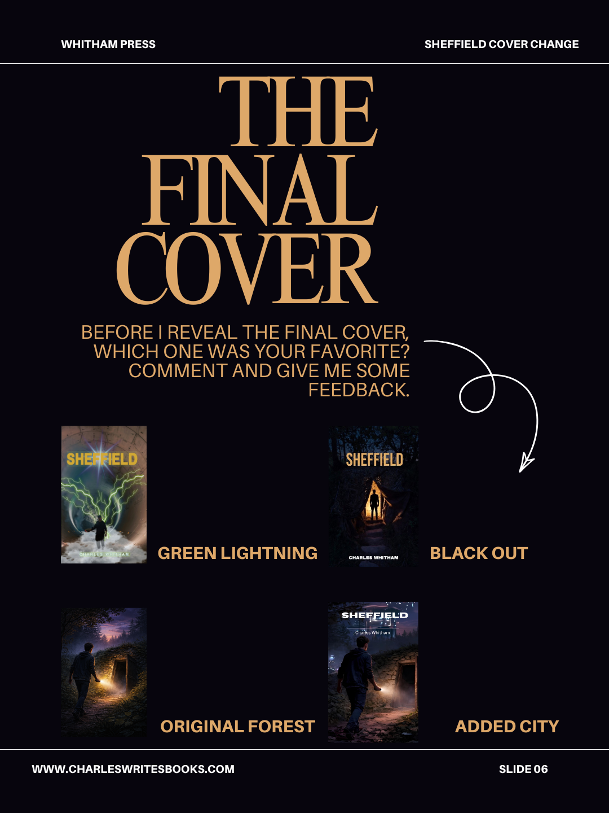
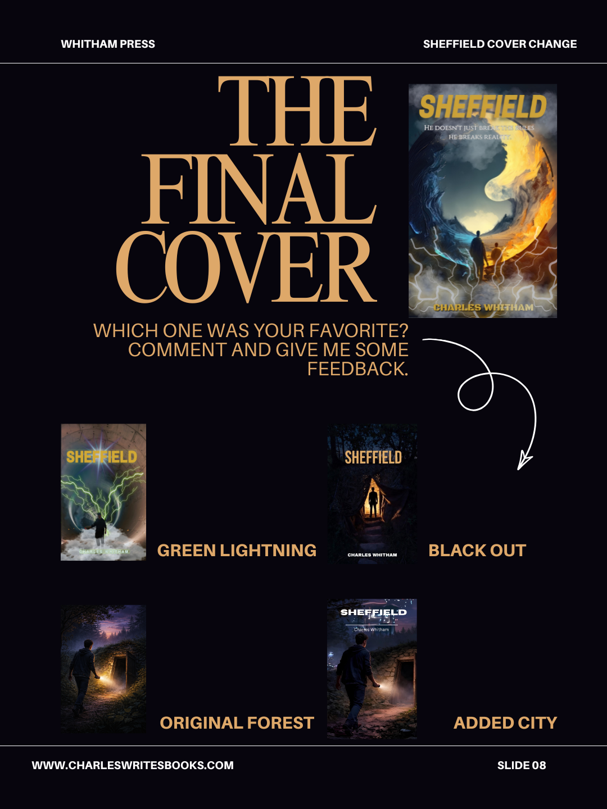

A book cover is supposed to be the first sentence of the story. It doesn't need to explain everything — it needs to make you want to know more. For two years, Sheffield's cover failed that test. I knew it. I just didn't know what to do about it.
Last week I finally changed it. And because I believe in transparency about the creative process — the messy, iterative, frequently embarrassing parts of it — I want to walk you through every version that came before, and explain why each one wasn't quite right.
Cover One: The Forest
The very first Sheffield cover was AI-generated, back before that phrase carried the weight it does now. I was working with early image generation tools, and honestly — I loved it at the time. A boy walking toward a glowing door in the forest at dusk. It had atmosphere. It had mystery. It felt like the beginning of something.
What it didn't have was specificity. The forest could have been any forest. The door could have opened onto anything. Nothing about the image told you this was a story about parallel worlds, time travel, a death cult, a fifteen-year-old trying to find his way home. It was beautiful and vague, and beauty without meaning is just decoration.
Cover Two: Adding the City
My first instinct was to add context rather than start over. The story is about a boy pulled from his present into a desolate future — so I replaced the trees in the background with a glimpsed future city. The portal now opened onto something. You could feel the contrast between the wild, dark foreground and the distant civilisation on the other side.
It was better. But it was also doing too much work. A cover that requires explanation is a cover that isn't quite finished. The city felt added, because it was added — and readers can sense that kind of visual compromise even when they can't articulate why.
Cover Three: The Canva Experiment
At some point I decided the problem was the AI imagery itself — that I needed to build something from scratch rather than iterate on a generated image. So I opened Canva and spent a weekend making a cover that was entirely my own work. No generation, no AI, just composition tools and stock elements and my own creative judgment.
The result was technically mine and aesthetically wrong. It had a portal made of light and green lightning, which looked striking on a slide but felt generic on a book cover — like a hundred other sci-fi novels I'd seen on the same Amazon page. It didn't feel like Sheffield. It felt like science fiction, which is a different thing entirely.
"It didn't feel like Sheffield. It felt like science fiction — which is a different thing entirely."
Cover Four: Returning to AI, Getting Closer
I came back to AI generation with a clearer brief. I wanted the darkness of the original forest image but with something hidden in it — a detail that rewarded attention. I generated the "Blackout" version: that same moody silhouette in the doorway, but with a small hourglass tucked into the shadows. A nod to the time travel at the heart of the book, visible only if you looked.
This was the version that ran on the first edition. And it was good. I was proud of it. It captured the feel of the story better than anything before it. But something still nagged at me — the cover was about atmosphere, not about the actual conflict of the book. Sheffield's world isn't just dark forests and hidden doors. It's two realities pulling against each other. Ice and fire. Past and future. The version of your father you know, and the stranger who looks exactly like him.
Before the Reveal: Which Was Your Favourite?
Before I showed anyone the final cover, I posted the four previous versions and asked readers to vote. Which one had been closest? Which one had them most curious about the story?
The responses were genuinely useful — and genuinely split. Some people loved the original forest. Others felt the Blackout version was the strongest. Almost nobody picked the Canva cover, which vindicated several sleepless nights of doubt. The feedback confirmed what I already suspected: the covers I'd made were all reaching for the same thing, and none of them had quite landed it.


The Final Cover
The new cover is the one that finally shows you both worlds at once. Two figures — Sheffield and his double — standing at the boundary of two realities that mirror and oppose each other. Ice and fire. Night and day. The yin-yang structure isn't accidental: the book is fundamentally about duality, about what happens when two versions of the same life exist simultaneously and have to decide which one is real.
When I first saw this image, something settled. Not relief exactly — more like recognition. This was the cover that Sheffield had been waiting for. It doesn't just suggest the story. It is the story, compressed into a single image.
The new cover is live now on Amazon, on my website, and everywhere else Sheffield appears. If you've had the old cover on your device, the eBook will update automatically. The paperback is already printing with the new art.
If you haven't read Sheffield yet — well, now you know what you're getting into. Two worlds. Two days to get home. One cover that finally tells the truth about what's inside.
—Charles